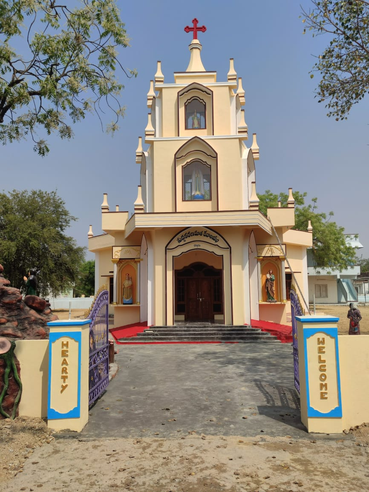

⌂
People & Community
Honour the wisdom of senior citizens, stand beside families facing hardship and nurture friendship across generations.
FAITH · SERVICE · COMPASSION
Together, let us strengthen our church, care for our neighbours, support our children and build a brighter future for Dharmaram.
“Whatever you did for one of the least of these brothers and sisters of mine, you did for me.” — Matthew 25:40
WELCOME
Welcome to the official community website of Our Lady of Purification Church, Dharmaram Parish. This website brings together our parish life and our shared commitment to village welfare.
With the guidance of the Parish Priest and the cooperation of parishioners, villagers, well-wishers and friends, we hope to support meaningful projects with dignity, fairness and accountability.
Discover how you can help →Every act of kindness can bring hope — a school book, a helping hand to an elderly neighbour, support during illness, or assistance to a farming family.
“Let all that you do be done in love.” — 1 Corinthians 16:14
OUR PARISH
Dharmaram Parish is part of the Diocese of Nalgonda. Our parish is a place of prayer, worship, fellowship and service. We seek to grow together in faith and to share Christ's love through practical care for people in need.
Parish: Dharmaram Parish
Diocese: Diocese of Nalgonda
Address: Dharmaram Village & Post, Addaguduru Mandal, Yadadri Bhuvanagiri District, Telangana – 508277, India.
Rev. Fr. Balaraju. K.
Our parish is a family united in faith, prayer and love. Let us grow together in Christ, care for one another, support families in need, guide our children in faith and education, and bring hope to every home. May Our Lady of Purification continue to guide and bless our parish and the entire Dharmaram community.
The parish accompanies families through the sacramental life of the Church, including Baptism, First Holy Communion, Confirmation, Reconciliation, Marriage and the Anointing of the Sick. For preparation, required documents, appointments and funeral-related parish assistance, please contact the Parish Priest or parish office.
Mass timings and feast-day schedules: Please contact the parish office for the latest confirmed details.
OUR HOME
A community grows stronger when people care for one another and work together for the next generation.
Honour the wisdom of senior citizens, stand beside families facing hardship and nurture friendship across generations.
Encourage children to learn, remain in school, build confidence and prepare for a hopeful future.
Recognise the importance of farming families and explore fair, practical support for cultivation and livelihoods.
OUR COMMITMENT
A practical mission of compassion, opportunity and shared responsibility.
Respect, companionship and essential assistance.
Support for urgent needs, treatment access and recovery.
Help with essential needs and a caring community network.
Education, learning materials and brighter opportunities.
GIVE WITH PURPOSE
All contributions received will be properly recorded and used exclusively for the specific purposes communicated to donors.
Church maintenance, repairs, facilities, worship needs and approved development works.
Support church needs →Assistance for elderly people, people who are sick, persons with disabilities and families in crisis.
Support care →Respectful, needs-based support for widows and vulnerable households.
Support families →School supplies, uniforms, fees or other approved educational assistance for children.
Support education →Transparent, criteria-based assistance for seeds, inputs or seasonal cultivation needs.
Support farmers →Learning resources, school improvements and opportunities that help children thrive.
Support the school →A PERSONAL INVITATION
Your generosity, in any amount, can help create hope when it is managed carefully and shared fairly.
TRUST & ACCOUNTABILITY
We aim to publish clear, periodic summaries so donors and villagers can understand how funds are received and used. Personal details of beneficiaries must remain private.
YOUR SUPPORT MATTERS
Thank you for considering support for our church and village.
This QR code is officially authorised for donations to this fundraising initiative.
Donation purpose: Please mention the specific fund (Church / Senior & Sick Care / Widows / Education / Farmers / School) in the payment note, where possible.
For a receipt, please contact the authorised church or committee representative using the verified contact details published here.
GET IN TOUCH
For parish information, volunteering, donations or welfare assistance, please contact the authorised parish office.
SUDDIKARANA MATHA CHURCH
OUR LADY OF PURIFICATION CHURCH
DHARMARAM PARISH, DIOCESE OF NALGONDA
Dharmaram Village & Post, Addaguduru Mandal,
Yadadri Bhuvanagiri District, Telangana – 508277, India.
Phone: Rev. Fr. Balaraju. K : 6301474847
Email: purificationchurch@outlook.com
Not everyone can give money. You can also help by teaching, mentoring children, visiting elderly neighbours, supporting community activities or sharing professional skills.